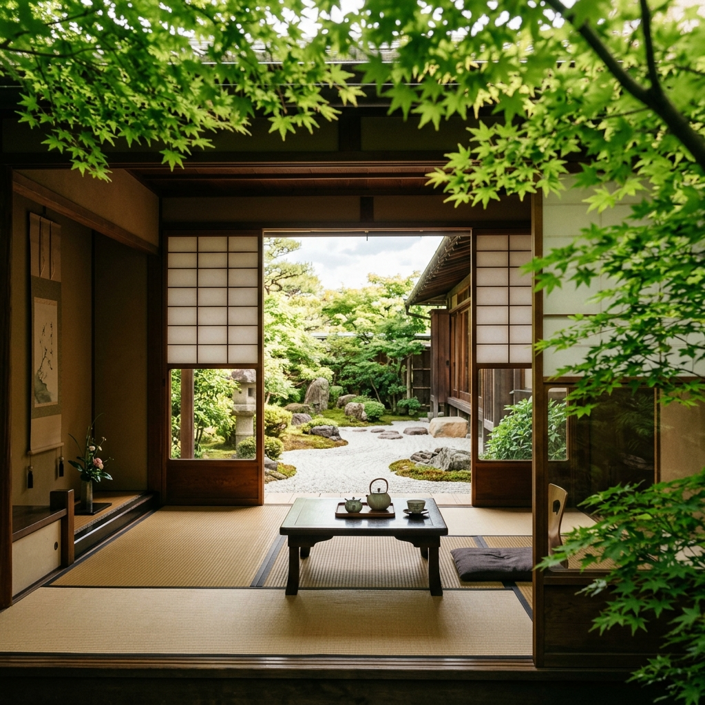
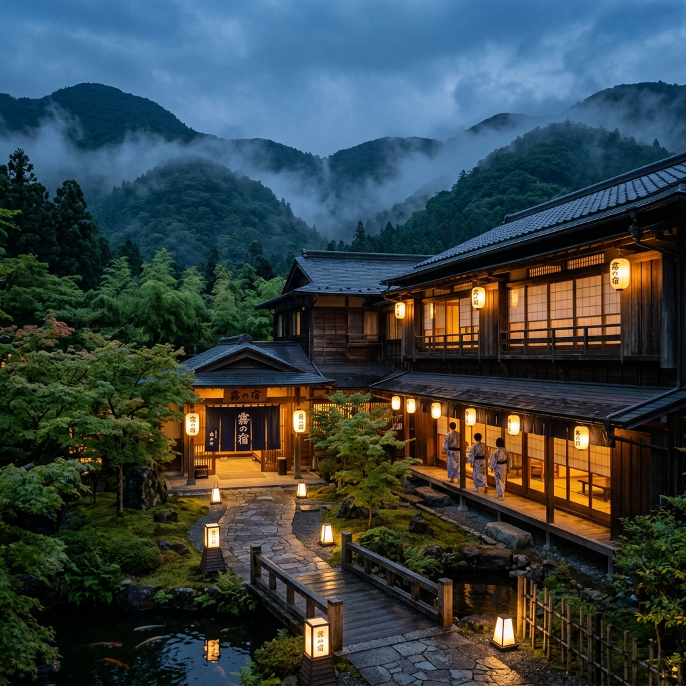
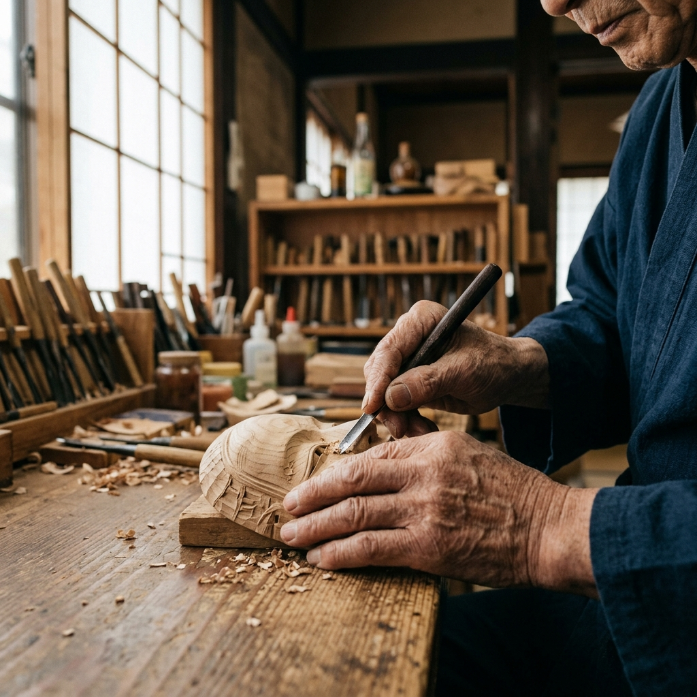
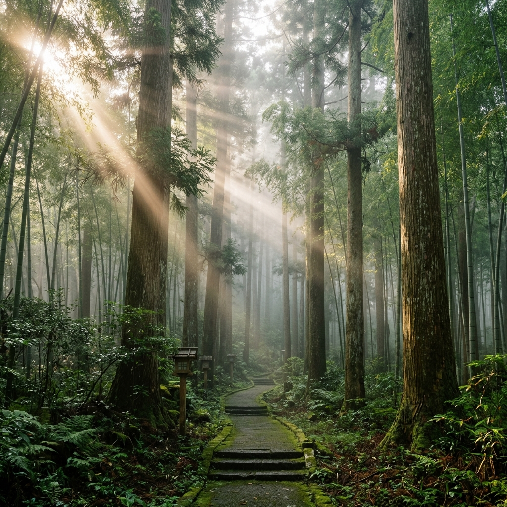
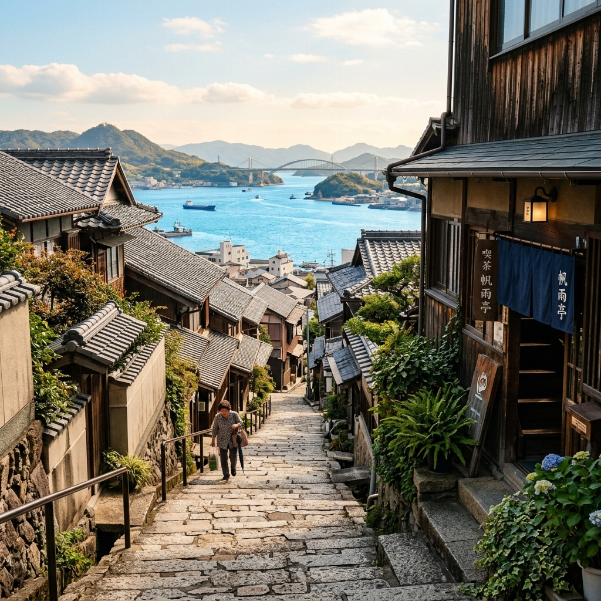
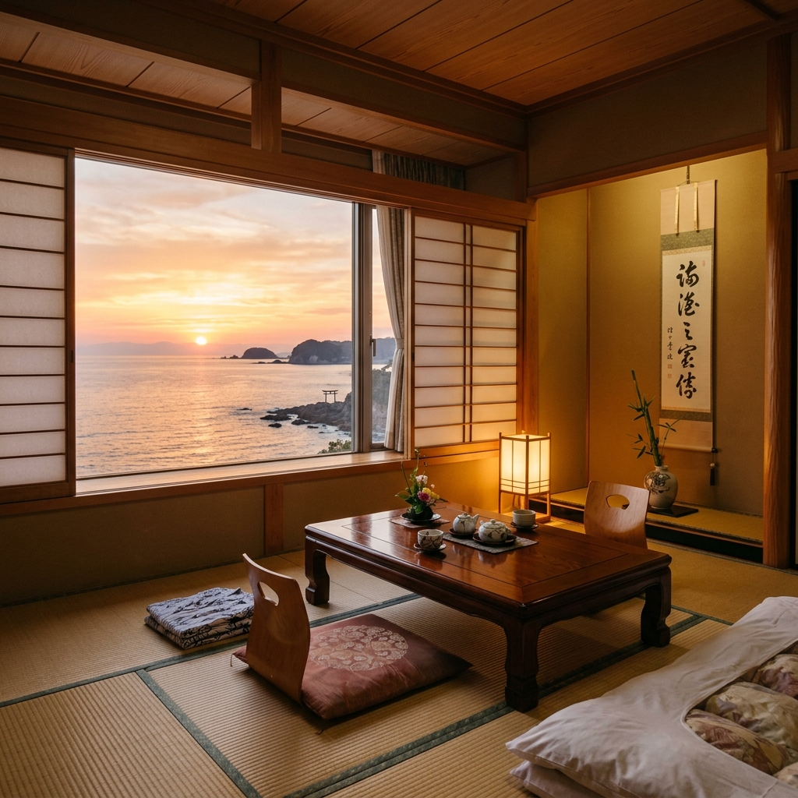

Travel / Hotel Stay
【京都旅】息を呑むほど美しい新緑と無印良品のお宿
圧倒的な映像美で切り取る新緑の京都と、無印良品が手掛ける宿での心安らぐホテルステイVlog。
映像を作り続ける理由はシンプルです。
まだ知られていない日本の美しさを伝えたいから。
映像制作を始めて6年。全国を巡るなかで、何度も感じてきました。
「まだまだ知らない美しい日本がある」と。
それは壮大な自然だけではありません。
小さな宿の温もり。職人の手仕事。土地に根づく食文化。
その場に流れる空気や、人の温かさ。
映像だからこそ残せるものがあります。
映像を見た人が、その場所へ足を運びたくなる。そんな映像を作り続けています。
私たちはただ綺麗に記録する映像クリエイターではありません。
その奥にある本質をすくい上げ、未来へつなぐ「映像作家」です。

単にお部屋や施設を写すのではありません。宿が紡いできた歴史や、そこに関わる人々の想い、訪れる人々を包み込む温もりなど、その宿だけの唯一無二の物語を描き出します。

お料理をただ綺麗に見せるのではなく、その土地に根ざした食文化や、職人の指先から生まれる手仕事に宿る精神を、敬意を持って映像に刻みます。

景色を単に記録するのではなく、そこを流れる風の音、差し込む光の温度、肌で感じる静けさなど、AIには表現できない「その瞬間の空気感」を捉えます。

圧倒的な映像美で切り取る新緑の京都と、無印良品が手掛ける宿での心安らぐホテルステイVlog。

どこか懐かしく美しい尾道の街並み、坂道、そして海。心惹かれるカフェを巡るシネマティックジャーニー。

地元・和歌山の魅力を再発見する白浜旅。1日の移ろいを感じる老舗温泉旅館の空気感を伝えるプロモーション。
大量集客ではなく、その土地の価値に共感するお客様との出会いを。
HOWELLは、宿の魅力を映像で翻訳し、ブランドを育てます。言葉では伝えきれない、お部屋の木の温もり、お料理に込められた土地の文化、そこを流れる豊かな時間を映像で表現します。
公式Webサイトの顔として、滞在体験を疑似体験させ、予約意欲を高めるメインビジュアル。訪れた瞬間に宿の世界観に引き込みます。
Instagram ReelsやTikTokなど、スマホで見やすい縦型動画。宿の魅力を一瞬で捉え、フォロワー80万人超の配信知見に基づいた構成で潜在層へ拡散します。
宿の周辺エリアが持つ魅力や、シェフがこだわる土地の食材、関わっている地元の人々の想いを描くドキュメンタリー。宿の体験価値を広げます。
映像を作るだけでなく、それを届ける力を持っています。SNSマーケティングの知見を活かした企画力で、制作した映像の価値を最大化します。
Vlogやシネマティック映像を通じて、深い世界観に共感するファンが定着しています。
日々の癒しや美しい日本の瞬間を切り取ったリール動画が広く拡散されています。
縦型ショート動画のトレンドを押さえた構成で、新たな旅行層へリーチします。
Total Audience 800,000+
当ページの相談フォームよりお気軽にご連絡ください。大まかなイメージやご予算、ご希望の時期などを伺います。
オンラインまたは対面にて、宿やブランドの持つ想いを丁寧にお聞きします。現地でのロケーション撮影が可能かどうかも含めてすり合わせます。
構成案やスケジュール、明確な費用を記載したお見積書をご提案します。イメージのズレを防ぐため、絵コンテやリファレンス動画等で共有します。
ドローン空撮も含め、その場の空気感を最高品質で撮影します。ショート動画であれば1週間以内に初稿をお送りし、2回までの修正に対応します。
最短2週間で、各種SNSやWebサイトに適した形式で映像データをお届けします。SNSでの効果的な公開方法や運用のコツについてもアドバイスいたします。
ご要望に合わせた柔軟なプランをご用意しています。まずは相談ベースでのお問い合わせも歓迎です。
はい、全国どこでも出張撮影が可能です。交通費・宿泊費が別途必要となる場合がございますが、まずはお気軽にご相談ください。
ブランドストーリープランではドローン撮影が基本料金に含まれております。その他のプランでもオプションとして追加可能です。航空法に基づく申請手続きもこちらで行います。
ショート動画やVlogプランの場合は1日（朝〜夜）での撮影が基本です。天候や季節の移ろいを取り入れたい場合は、複数日に分けての撮影も対応いたします。
すべてのプランで、初稿提出後2回までの修正に対応しております。3回目以降の大きな修正は追加費用をいただく場合がございます。
宿泊施設・地域ブランドのプロモーションから、写真提供を含めた撮影のご相談など、どうぞお気軽にご連絡ください。まずはオンラインでのカジュアルなご相談も可能です。